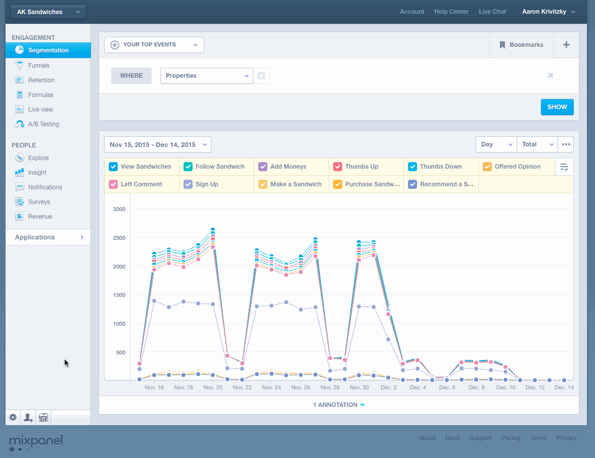
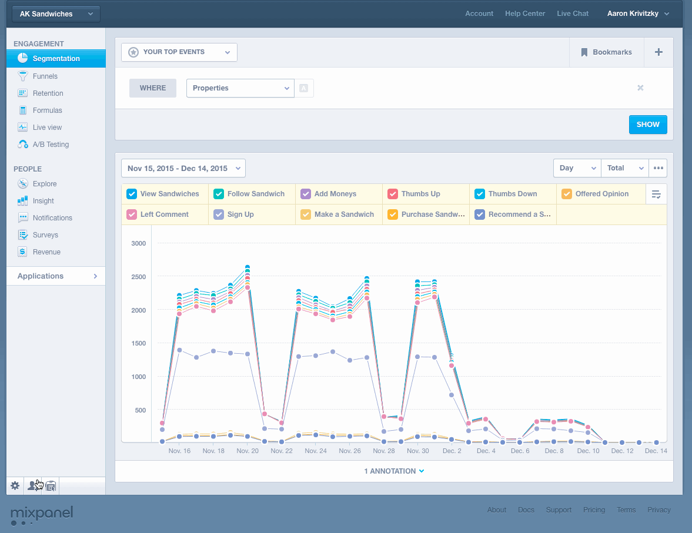
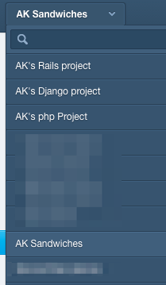
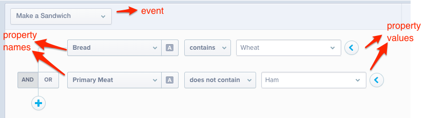
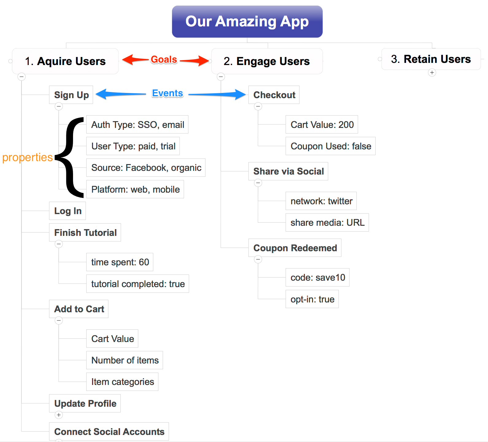
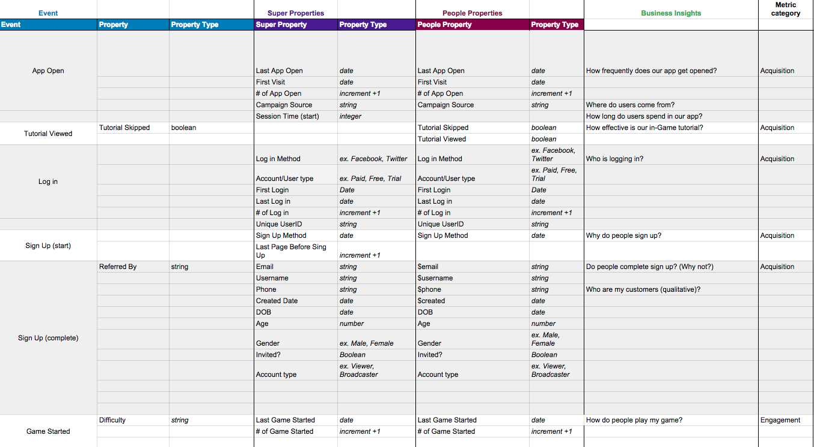

Include our SDK
To start tracking with the Mixpanel JavaScript library, you'll paste our initialization code into all the pages in your side of inside the <head> and </head> tags.
To start tracking client-side with Android or iOS libraries, see our brief tutorials on installing client-side SDKs documentation for iOS and/or Android
If you're using server-side libraries, such as python, java, node, ruby, or HTTP (to name a few) we also have implementation documentation on these libraries.
Regardless of which library you choose, you will need to get your mixpanel project token. The token uniquely identifies your mixpanel project, and is critical to properly send Mixpanel event. Your projects token is located in the settings menu and can be accessed like this:

Note: it is a best practice to create a mixpanel project for development and one for production. The only difference between the two would be the token.
Invite your Team
Mixpanel breaks down data silos by making analytics accessible to users of all types. Therefore, inviting your team to Mixpanel a critical step to moving towards data-driven decisions.
Membership controls are implemented on a per-project basis. To add people to your team, find the ‘invite team members button in the bottom left corner of the screen, and add users by entering their email and pressing invite:

Note that users with an existing Mixpanel account will not get an email; they will simply be added to that project
Mixpanel projects you belong to are indicated in the top left drop-down of the application:

Focus on your Goals
Mixpanel is an event-driven analytics platform. Unlike other analytics tools, You will determine the actions (events) and details (properties) which are important inside your application. Describing data in the form of events and properties is what allows us to ask complex questions of data:

Events are the primary actions that a user will take in your application... examples of events would be: logging in, adding a friend, leaving a comment, making a sandwich, adding an item to cart, making in-app purchase, checking out etc... Events are the top level object in mixpanel, and they will be the genesis for most of your analysis
Properties are what describe those events and make them more meaningful. Properties are essential to every good mixpanel implementation. Examples of properties would be: User Type, $ in Cart, Page Name, # of times opened, or 'type of bread' if you like the example above.
Here's a pretty simple and straighforward visualization that may help you better understand the structure of events and properties in mixpanel:

Because the relationsip of events and properties can be complex, we highly reccomend authoring a document which specifically details the events and properties in your application you'd like to track.
From our experience, a good implementation spec looks like this:

[If there was to be a split between the overarching sections, it would be right here.]
Evolve your Analytics
Use an implementation spec to ensure you track the actions that matter to your business. (How do I go about deciding specifically what to track and what not to track?) Provide your team with a roadmap of what your analytics will look like. (What is the benefit of / Why should I be using an implementation spec?)

[If there was to be a split between the overarching sections, it would be right here.]
Track Events
Track user actions within your site or app as events within Mixpanel. (What is an event? Including code box where you switch between a basic track call in JS, iOS, Android, and Other)
Identify your Users
Track user data within your site or app as people profiles within Mixpanel. (What is a profile? Including code box where you switch between a basic track call in JS, iOS, Android, and Other) Ensure the identity of your users remains consistent across all site or app visits. (How do I track a user time and time again? Explains identity management)
- Click on the up arrow button on the left hand side of the message box.
- Drag and drop your file into a channel.
- Take a screengrab, then use Ctrl/Cmd + V to paste it in.
Posts and Snippets are two types of files team members can create and share within Slack. To get started with either of these file types, click on the up arrow next to the input box.
- Posts are good for sharing notes and longer pieces of writing with your team.
- Snippets are best for sharing code or recreating a preformatted block of text.
Describe with Properties
Include properties with your events that describe the action which takes place. (How do I best use events in Mixpanel? Includes the value prop of properties/super properties) Record properties which will act as targeted triggers to send users. (How do I best use people profiles within Mixpanel? Includes the types of properties that should be tracked) Analyze a historical (event properties) and present (people properties) view of your data. (What is the difference between event and people properties and why should I utilize both?)
Analyze in Reports
Analyze the count and type of events being fired. (What is Segmentation?) Measure the conversion of users towards a specific goal. (What are Funnels?) Calculate the loyalty of your customers over time. (What is Retention?)
Send a Notification
Engage users across important communications channels. (What types of notifications can I send with Mixpanel?) Send targeted notifications based on the traits of your users. (How do I target my users?) Measure user engagement based on the receipt of a notification. (How do I measure the effectiveness of my campaigns?)
Experiment with A/B Testing
Iterate on your design and test product changes with customers. (What is A/B Testing?)
Debug Instantly
Debug directly with instant access to analytics data. (What is Live View?) Keep your production and development data separate. (How do I set up a dev and production project for my data?)
Read More
Links to important resources. (Examples: Dev docs, Common Qs, Mixpanel U, etc.)
Get Help
How to find the right contact for assistance. (What is Support? Potential for including other role types since each customer has a different POC at MP)